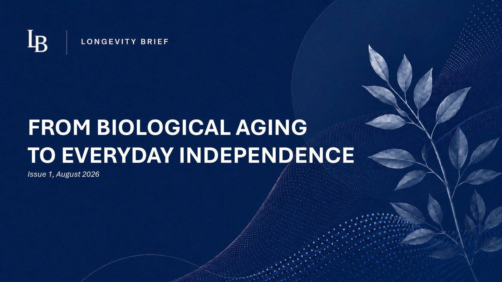

Issue 01 · August 2026 · 7-minute read
From Biological Aging to Everyday Independence
From molecular aging to mobility and disability, Issue 01 explores how emerging science can help us understand the capacities that sustain independence.
Read Issue 01 on LinkedIn ↗